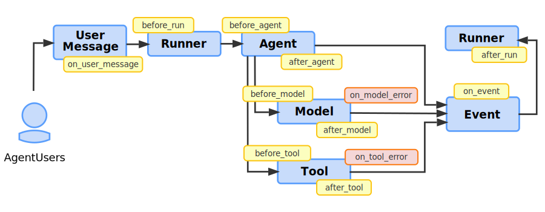

Plugins¶
What is a Plugin?¶
A Plugin in Agent Development Kit (ADK) is a custom code module that can be executed at various stages of an agent workflow lifecycle using callback hooks. You use Plugins for functionality that is applicable across your agent workflow. Some typical applications of Plugins are as follows:
- Logging and tracing: Create detailed logs of agent, tool, and generative AI model activity for debugging and performance analysis.
- Policy enforcement: Implement security guardrails, such as a function that checks if users are authorized to use a specific tool and prevent its execution if they do not have permission.
- Monitoring and metrics: Collect and export metrics on token usage, execution times, and invocation counts to monitoring systems such as Prometheus or Google Cloud Observability (formerly Stackdriver).
- Response caching: Check if a request has been made before, so you can return a cached response, skipping expensive or time consuming AI model or tool calls.
- Request or response modification: Dynamically add information to AI model prompts or standardize tool output responses.
Tip
When implementing security guardrails and policies, use ADK Plugins for better modularity and flexibility than Callbacks. For more details, see Callbacks and Plugins for Security Guardrails.
Caution
Plugins are not supported by the ADK web interface. If your ADK workflow uses Plugins, you must run your workflow without the web interface.
Tip: When implementing security guardrails and policies, use ADK Plugins for better modularity and flexibility than Callbacks. For more details, see Callbacks and Plugins for Security Guardrails.
How do Plugins work?¶
An ADK Plugin extends the BasePlugin class and contains one or more
callback methods, indicating where in the agent lifecycle the Plugin should be
executed. You integrate Plugins into an agent by registering them in your
agent's Runner class. For more information on how and where you can trigger
Plugins in your agent application, see
Plugin callback hooks.
Plugin functionality builds on
Callbacks, which is a key design
element of the ADK's extensible architecture. While a typical Agent Callback is
configured on a single agent, a single tool for a specific task, a Plugin is
registered once on the Runner and its callbacks apply globally to every
agent, tool, and LLM call managed by that runner. Plugins let you package
related callback functions together to be used across a workflow. This makes
Plugins an ideal solution for implementing features that cut across your entire
agent application.
Define and register Plugins¶
This section explains how to define Plugin classes and register them as part of your agent workflow. For a complete code example, see Plugin Basic in the repository.
Create Plugin class¶
Start by extending the BasePlugin class and add one or more callback
methods, as shown in the following code example:
from google.adk.agents.base_agent import BaseAgent
from google.adk.agents.callback_context import CallbackContext
from google.adk.models.llm_request import LlmRequest
from google.adk.plugins.base_plugin import BasePlugin
class CountInvocationPlugin(BasePlugin):
"""A custom plugin that counts agent and tool invocations."""
def __init__(self) -> None:
"""Initialize the plugin with counters."""
super().__init__(name="count_invocation")
self.agent_count: int = 0
self.tool_count: int = 0
self.llm_request_count: int = 0
async def before_agent_callback(
self, *, agent: BaseAgent, callback_context: CallbackContext
) -> None:
"""Count agent runs."""
self.agent_count += 1
print(f"[Plugin] Agent run count: {self.agent_count}")
async def before_model_callback(
self, *, callback_context: CallbackContext, llm_request: LlmRequest
) -> None:
"""Count LLM requests."""
self.llm_request_count += 1
print(f"[Plugin] LLM request count: {self.llm_request_count}")
This example code implements callbacks for before_agent_callback and
before_model_callback to count execution of these tasks during the lifecycle
of the agent.
Register Plugin class¶
Integrate your Plugin class by registering it during your agent initialization
as part of your Runner class, using the plugins parameter. You can specify
multiple Plugins with this parameter. The following code example shows how to
register the CountInvocationPlugin plugin defined in the previous section with
a simple ADK agent.
from google.adk.runners import InMemoryRunner
from google.adk import Agent
from google.adk.tools.tool_context import ToolContext
from google.genai import types
import asyncio
# Import the plugin.
from .count_plugin import CountInvocationPlugin
async def hello_world(tool_context: ToolContext, query: str):
print(f'Hello world: query is [{query}]')
root_agent = Agent(
model='gemini-2.0-flash',
name='hello_world',
description='Prints hello world with user query.',
instruction="""Use hello_world tool to print hello world and user query.
""",
tools=[hello_world],
)
async def main():
"""Main entry point for the agent."""
prompt = 'hello world'
runner = InMemoryRunner(
agent=root_agent,
app_name='test_app_with_plugin',
# Add your plugin here. You can add multiple plugins.
plugins=[CountInvocationPlugin()],
)
# The rest is the same as starting a regular ADK runner.
session = await runner.session_service.create_session(
user_id='user',
app_name='test_app_with_plugin',
)
async for event in runner.run_async(
user_id='user',
session_id=session.id,
new_message=types.Content(
role='user', parts=[types.Part.from_text(text=prompt)]
)
):
print(f'** Got event from {event.author}')
if __name__ == "__main__":
asyncio.run(main())
Run the agent with the Plugin¶
Run the plugin as you typically would. The following shows how to run the command line:
Plugins are not supported by the ADK web interface. If your ADK workflow uses Plugins, you must run your workflow without the web interface.
The output of this previously described agent should look similar to the following:
[Plugin] Agent run count: 1
[Plugin] LLM request count: 1
** Got event from hello_world
Hello world: query is [hello world]
** Got event from hello_world
[Plugin] LLM request count: 2
** Got event from hello_world
For more information on running ADK agents, see the Quickstart guide.
Build workflows with Plugins¶
Plugin callback hooks are a mechanism for implementing logic that intercepts, modifies, and even controls the agent's execution lifecycle. Each hook is a specific method in your Plugin class that you can implement to run code at a key moment. You have a choice between two modes of operation based on your hook's return value:
- To Observe: Implement a hook with no return value (
None). This approach is for tasks such as logging or collecting metrics, as it allows the agent's workflow to proceed to the next step without interruption. For example, you could useafter_tool_callbackin a Plugin to log every tool's result for debugging. - To Intervene: Implement a hook and return a value. This approach
short-circuits the workflow. The
Runnerhalts processing, skips any subsequent plugins and the original intended action, like a Model call, and use a Plugin callback's return value as the result. A common use case is implementingbefore_model_callbackto return a cachedLlmResponse, preventing a redundant and costly API call. - To Amend: Implement a hook and modify the Context object. This approach allows you to modify the context data for the module to be executed without otherwise interrupting the execution of that module. For example, adding additional, standardized prompt text for Model object execution.
Caution: Plugin callback functions have precedence over callbacks
implemented at the object level. This behavior means that Any Plugin callbacks
code is executed before any Agent, Model, or Tool objects callbacks are
executed. Furthermore, if a Plugin-level agent callback returns any value, and
not an empty (None) response, the Agent, Model, or Tool-level callback is not
executed (skipped).
The Plugin design establishes a hierarchy of code execution and separates
global concerns from local agent logic. A Plugin is the stateful module you
build, such as PerformanceMonitoringPlugin, while the callback hooks are the
specific functions within that module that get executed. This architecture
differs fundamentally from standard Agent Callbacks in these critical ways:
- Scope: Plugin hooks are global. You register a Plugin once on the
Runner, and its hooks apply universally to every Agent, Model, and Tool it manages. In contrast, Agent Callbacks are local, configured individually on a specific agent instance. - Execution Order: Plugins have precedence. For any given event, the Plugin hooks always run before any corresponding Agent Callback. This system behavior makes Plugins the correct architectural choice for implementing cross-cutting features like security policies, universal caching, and consistent logging across your entire application.
Agent Callbacks and Plugins¶
As mentioned in the previous section, there are some functional similarities between Plugins and Agent Callbacks. The following table compares the differences between Plugins and Agent Callbacks in more detail.
| Plugins | Agent Callbacks | |
|---|---|---|
| Scope | Global: Apply to all agents/tools/LLMs in the
Runner. |
Local: Apply only to the specific agent instance they are configured on. |
| Primary Use Case | Horizontal Features: Logging, policy, monitoring, global caching. | Specific Agent Logic: Modifying the behavior or state of a single agent. |
| Configuration | Configure once on the Runner. |
Configure individually on each BaseAgent instance. |
| Execution Order | Plugin callbacks run before Agent Callbacks. | Agent callbacks run after Plugin callbacks. |
Plugin callback hooks¶
You define when a Plugin is called with the callback functions to define in
your Plugin class. Callbacks are available when a user message is received,
before and after an Runner, Agent, Model, or Tool is called, for
Events, and when a Model, or Tool error occurs. These callbacks include,
and take precedence over, the any callbacks defined within your Agent, Model,
and Tool classes.
The following diagram illustrates callback points where you can attach and run Plugin functionality during your agents workflow:
 Figure 1. Diagram of ADK agent workflow with Plugin callback hook locations.
The following sections describe the available callback hooks for Plugins in more detail.
- User Message callbacks
- Runner start callbacks
- Agent execution callbacks
- Model callbacks
- Tool callbacks
- Runner end callbacks
User Message callbacks¶
A User Message callback (on_user_message_callback) happens when a user
sends a message. The on_user_message_callback is the very first hook to run,
giving you a chance to inspect or modify the initial input.\
- When It Runs: This callback happens immediately after
runner.run(), before any other processing. - Purpose: The first opportunity to inspect or modify the user's raw input.
- Flow Control: Returns a
types.Contentobject to replace the user's original message.
The following code example shows the basic syntax of this callback:
async def on_user_message_callback(
self,
*,
invocation_context: InvocationContext,
user_message: types.Content,
) -> Optional[types.Content]:
Runner start callbacks¶
A Runner start callback (before_run_callback) happens when the Runner
object takes the potentially modified user message and prepares for execution.
The before_run_callback fires here, allowing for global setup before any agent
logic begins.
- When It Runs: Immediately after
runner.run()is called, before any other processing. - Purpose: The first opportunity to inspect or modify the user's raw input.
- Flow Control: Return a
types.Contentobject to replace the user's original message.
The following code example shows the basic syntax of this callback:
async def before_run_callback(
self, *, invocation_context: InvocationContext
) -> Optional[types.Content]:
Agent execution callbacks¶
Agent execution callbacks (before_agent, after_agent) happen when a
Runner object invokes an agent. The before_agent_callback runs immediately
before the agent's main work begins. The main work encompasses the agent's
entire process for handling the request, which could involve calling models or
tools. After the agent has finished all its steps and prepared a result, the
after_agent_callback runs.
Caution: Plugins that implement these callbacks are executed before the
Agent-level callbacks are executed. Furthermore, if a Plugin-level agent
callback returns anything other than a None or null response, the Agent-level
callback is not executed (skipped).
For more information about Agent callbacks defined as part of an Agent object, see Types of Callbacks.
Model callbacks¶
Model callbacks (before_model, after_model, on_model_error) happen
before and after a Model object executes. The Plugins feature also supports a
callback in the event of an error, as detailed below:
- If an agent needs to call an AI model,
before_model_callbackruns first. - If the model call is successful,
after_model_callbackruns next. - If the model call fails with an exception, the
on_model_error_callbackis triggered instead, allowing for graceful recovery.
Caution: Plugins that implement the before_model and **after_model
callback methods are executed before the Model-level callbacks are executed.
Furthermore, if a Plugin-level model callback returns anything other than a
None or null response, the Model-level callback is not executed (skipped).
Model on error callback details¶
The on error callback for Model objects is only supported by the Plugins feature works as follows:
- When It Runs: When an exception is raised during the model call.
- Common Use Cases: Graceful error handling, logging the specific error, or returning a fallback response, such as "The AI service is currently unavailable."
- Flow Control:
- Returns an
LlmResponseobject to suppress the exception and provide a fallback result. - Returns
Noneto allow the original exception to be raised.
- Returns an
Note: If the execution of the Model object returns a LlmResponse, the
system resumes the execution flow, and after_model_callback will be triggered
normally.****
The following code example shows the basic syntax of this callback:
async def on_model_error_callback(
self,
*,
callback_context: CallbackContext,
llm_request: LlmRequest,
error: Exception,
) -> Optional[LlmResponse]:
Tool callbacks¶
Tool callbacks (before_tool, after_tool, on_tool_error) for Plugins
happen before or after the execution of a tool, or when an error occurs. The
Plugins feature also supports a callback in the event of an error, as detailed
below:\
- When an agent executes a Tool,
before_tool_callbackruns first. - If the tool executes successfully,
after_tool_callbackruns next. - If the tool raises an exception, the
on_tool_error_callbackis triggered instead, giving you a chance to handle the failure. Ifon_tool_error_callbackreturns a dict,after_tool_callbackwill be triggered normally.
Caution: Plugins that implement these callbacks are executed before the
Tool-level callbacks are executed. Furthermore, if a Plugin-level tool callback
returns anything other than a None or null response, the Tool-level callback
is not executed (skipped).
Tool on error callback details¶
The on error callback for Tool objects is only supported by the Plugins feature works as follows:
- When It Runs: When an exception is raised during the execution of a
tool's
runmethod. - Purpose: Catching specific tool exceptions (like
APIError), logging the failure, and providing a user-friendly error message back to the LLM. - Flow Control: Return a
dictto suppress the exception, provide a fallback result. ReturnNoneto allow the original exception to be raised.
Note: By returning a dict, this resumes the execution flow, and
after_tool_callback will be triggered normally.
The following code example shows the basic syntax of this callback:
async def on_tool_error_callback(
self,
*,
tool: BaseTool,
tool_args: dict[str, Any],
tool_context: ToolContext,
error: Exception,
) -> Optional[dict]:
Event callbacks¶
An Event callback (on_event_callback) happens when an agent produces
outputs such as a text response or a tool call result, it yields them as Event
objects. The on_event_callback fires for each event, allowing you to modify it
before it's streamed to the client.
- When It Runs: After an agent yields an
Eventbut before it's sent to the user. An agent's run may produce multiple events. - Purpose: Useful for modifying or enriching events (e.g., adding metadata) or for triggering side effects based on specific events.
- Flow Control: Return an
Eventobject to replace the original event.
The following code example shows the basic syntax of this callback:
async def on_event_callback(
self, *, invocation_context: InvocationContext, event: Event
) -> Optional[Event]:
Runner end callbacks¶
The Runner end callback (after_run_callback) happens when the agent has
finished its entire process and all events have been handled, the Runner
completes its run. The after_run_callback is the final hook, perfect for
cleanup and final reporting.
- When It Runs: After the
Runnerfully completes the execution of a request. - Purpose: Ideal for global cleanup tasks, such as closing connections or finalizing logs and metrics data.
- Flow Control: This callback is for teardown only and cannot alter the final result.
The following code example shows the basic syntax of this callback: